2 A Single Heatmap#
A single heatmap is the most widely used visualization for matrix
data. Although the signature strength of
ComplexHeatmap-py lies in aligning a list of multiple
heatmaps and annotations in parallel, each single Heatmap
serves as the fundamental building block, so configuring it well is
essential.
First, let’s generate a synthetic 18 × 24
pandas.DataFrame containing three row groups and three
column groups, with rows and columns randomly shuffled:
import numpy as np
import pandas as pd
import complexheatmap as ch
from complexheatmap import Heatmap, colorRamp2, draw, gpar, unit
rng = np.random.default_rng(123)
nr1, nr2, nr3 = 4, 8, 6
nc1, nc2, nc3 = 6, 8, 10
nr = nr1 + nr2 + nr3
nc = nc1 + nc2 + nc3
b1 = np.vstack([
rng.normal(1.0, 0.5, (nr1, nc1)),
rng.normal(0.0, 0.5, (nr2, nc1)),
rng.normal(0.0, 0.5, (nr3, nc1)),
])
b2 = np.vstack([
rng.normal(0.0, 0.5, (nr1, nc2)),
rng.normal(1.0, 0.5, (nr2, nc2)),
rng.normal(0.0, 0.5, (nr3, nc2)),
])
b3 = np.vstack([
rng.normal(0.5, 0.5, (nr1, nc3)),
rng.normal(0.5, 0.5, (nr2, nc3)),
rng.normal(1.0, 0.5, (nr3, nc3)),
])
mat = np.hstack([b1, b2, b3])
mat = mat[np.ix_(rng.permutation(nr), rng.permutation(nc))]
mat = pd.DataFrame(
mat,
index=[f"row{i + 1}" for i in range(nr)],
columns=[f"column{j + 1}" for j in range(nc)],
)Calling Heatmap(mat) with only the matrix creates a
Heatmap with default settings, and calling
draw(ht) (or ht.draw()) renders dendrograms,
row/column names, and a continuous blue-white-red color legend:
ht = Heatmap(mat)
draw(ht)
By default, the legend title is taken from the name of
the heatmap. Each heatmap has a name acting as a unique
identifier, which becomes important when concatenating multiple heatmaps
or referencing a heatmap in decorate_* calls. When
name is omitted, an automatic internal name of the form
matrix_%d is assigned. Throughout the remaining examples in
this chapter, we pass name="mat".
Because Heatmap() is a lazy constructor (see Section 2.11), in Python scripts or inside
loops and functions you should explicitly call draw(ht) or
ht.draw() (passing save="heatmap.png" to write
directly to disk):
for item in matrices:
ht = Heatmap(item, name="mat")
draw(ht, save="out.png")2.1 Colors#
For continuous numeric matrices, colors are typically controlled by a
continuous color mapping function generated by
colorRamp2(breaks, colors). It accepts a vector of
breakpoints and a matching sequence of colors, linearly interpolating
inside every interval in CIE LAB color space by default and clamping
values outside the breakpoint range. Using colorRamp2()
also ensures the legend displays clean, meaningful ticks.
In the example below, values between -2 and
2 are interpolated from green through white to red, while
values above 2 map to pure red and values below
-2 map to pure green:
col_fun = colorRamp2([-2, 0, 2], ["green", "white", "red"])
col_fun(np.arange(-3, 4))
# ['#00FF00FF', '#00FF00FF', '#B1FF9AFF', '#FFFFFFFF', '#FF9E81FF', '#FF0000FF', '#FF0000FF']
draw(Heatmap(mat, name="mat", col=col_fun))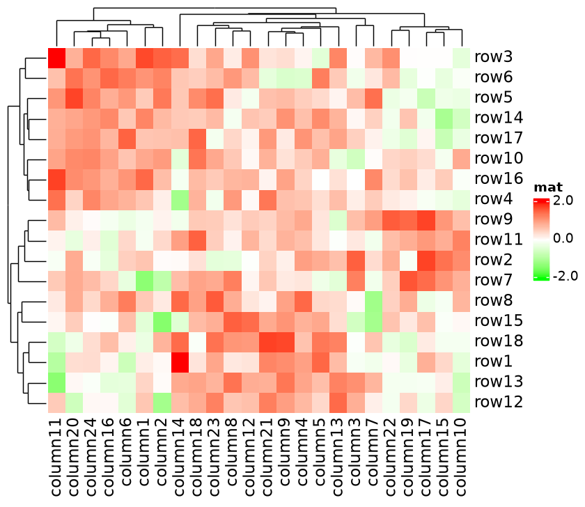
Notice two key properties of colorRamp2(): 1. Negative
values always map cleanly to green and positive values to red, centered
at 0. 2. Color mapping is robust to
outliers. Adding an extreme value
(mat2.iloc[0, 0] = 100000 using 0-based indexing)
dramatically alters clustering but leaves the color scale intact:
mat2 = mat.copy()
mat2.iloc[0, 0] = 100000.0
draw(Heatmap(mat2, name="mat", col=col_fun, column_title="a matrix with outliers"))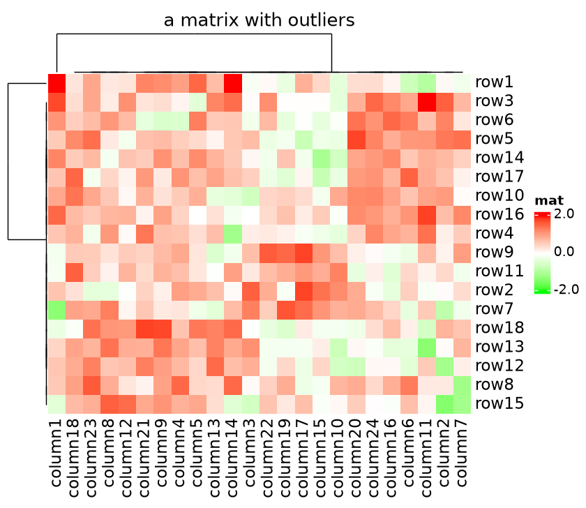
More importantly, sharing one col_fun across multiple
heatmaps guarantees identical value-to-color correspondence across
plots:
draw(Heatmap(mat, name="mat", col=col_fun, column_title="mat"))
draw(Heatmap(mat / 4.0, name="mat", col=col_fun, column_title="mat / 4"))
draw(Heatmap(np.abs(mat), name="mat", col=col_fun, column_title="abs(mat)"))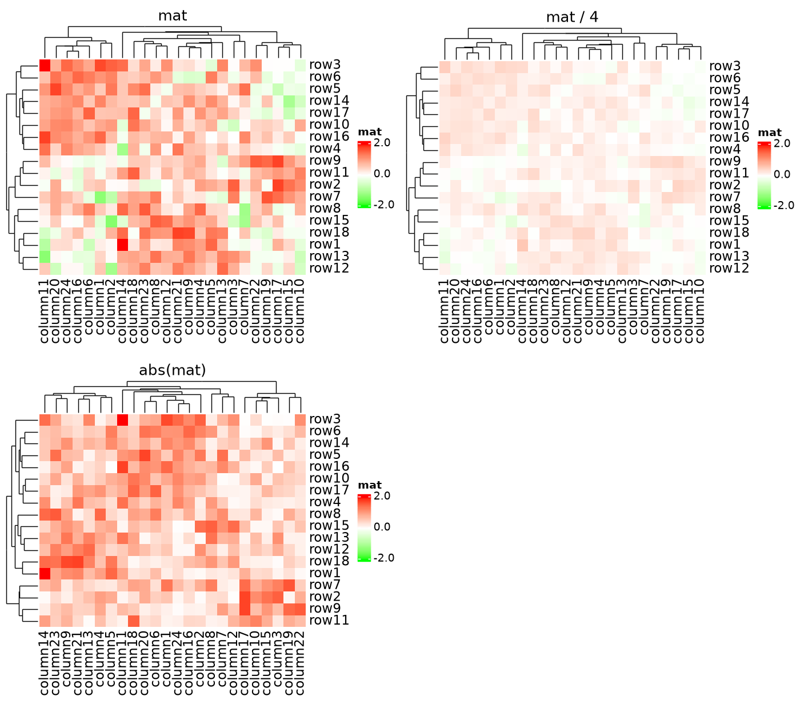
If you pass a plain list of colors to col for a
continuous matrix, ComplexHeatmap-py linearly
interpolates from min(mat) to max(mat). Keep
in mind that a raw color sequence is sensitive to outliers:
import matplotlib
rainbow_cols = [
matplotlib.colors.to_hex(matplotlib.colormaps["rainbow"](x))
for x in np.linspace(1.0, 0.0, 10)
]
draw(Heatmap(mat, name="mat", col=rainbow_cols, column_title="set a color vector for a continuous matrix"))
When the matrix holds discrete values (numeric or string), supply a
Python dict mapping each value to its color, which
automatically produces a discrete legend. For discrete integer matrices,
keys can be integers or strings:
rng = np.random.default_rng(123)
discrete_mat = rng.integers(1, 5, size=(10, 10))
colors = {1: "black", 2: "#DF536B", 3: "#61D04F", 4: "#2297E6"}
draw(Heatmap(discrete_mat, name="mat", col=colors, column_title="a discrete numeric matrix"))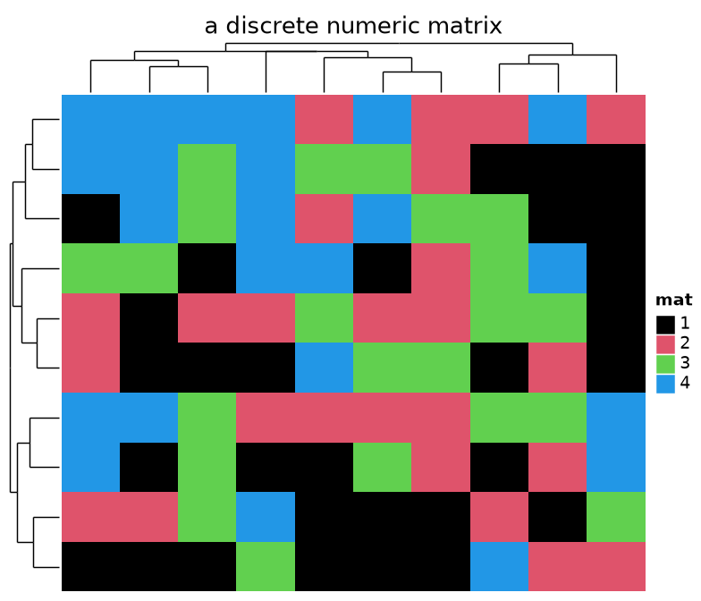
For character/string matrices, pass a dictionary mapping each
category string to a color (or an R palette integer
1..8):
discrete_char = rng.choice(["a", "b", "c", "d"], size=(10, 10))
colors_char = {"a": "black", "b": "#DF536B", "c": "#61D04F", "d": "#2297E6"}
draw(Heatmap(discrete_char, name="mat", col=colors_char, column_title="a discrete character matrix"))
Notice that numeric matrices enable row and column clustering by default (for both continuous and discrete colors), whereas character matrices disable clustering by default unless a custom clustering object or distance function is supplied (see Section 2.3.1).
Missing values (np.nan or None) are
supported and rendered with na_col (default
"grey"). Matrices containing NaN can still be
clustered using pairwise complete observations as long as no pair of
rows or columns lacks finite overlapping entries. NA values
are omitted from the legend:
mat_with_na = mat.mask(rng.choice([True, False], size=mat.shape, p=[0.1, 0.9]))
draw(Heatmap(mat_with_na, name="mat", na_col="black", column_title="a matrix with NA values"))
Color interpolation depends heavily on the color space.
colorRamp2() defaults to "LAB", while
"RGB", "sRGB", "XYZ", and
"HSV" are also supported:
brks = np.linspace(float(mat.min().min()), float(mat.max().max()), 3)
f1 = colorRamp2(brks, ["blue", "#EEEEEE", "red"], space="LAB")
f2 = colorRamp2(brks, ["blue", "#EEEEEE", "red"], space="RGB")
draw(Heatmap(mat, name="mat1", col=f1, column_title="LAB color space"))
draw(Heatmap(mat, name="mat2", col=f2, column_title="RGB color space"))
The differences across "RGB", "LAB",
"XYZ", and "HSV" are even clearer when
inspecting uniform ramps across green-black-red and blue-white-red
palettes:

Borders around the entire heatmap slice (border /
border_gp) and around individual cells
(rect_gp) are controlled with gpar(). Note an
important Python convention: in ComplexHeatmap-py,
pass border=True (or a color string) together with
border_gp=gpar(...) so the outer heatmap border is
drawn (border_gp alone leaves
border=False at its default):
draw(
Heatmap(
mat,
name="mat",
border=True,
border_gp=gpar(col="black", lty=2),
column_title="set heatmap borders",
)
)
draw(Heatmap(mat, name="mat", rect_gp=gpar(col="white", lwd=2), column_title="set cell borders"))
draw(Heatmap(mat, name="mat", rect_gp=gpar(type="none"), column_title="rect_gp = gpar(type='none')"))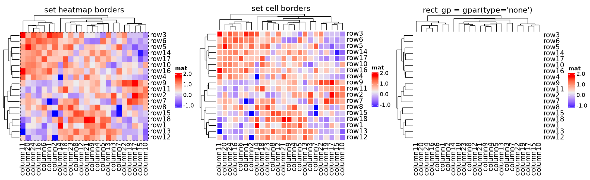
Setting rect_gp=gpar(type="none") performs clustering
and draws dendrograms/names/legends without filling cells in the heatmap
body, preparing a blank canvas for custom cell_fun or
layer_fun graphics (Section 2.9).
When col is omitted, ch.default_col()
infers a color mapping automatically: - For character/categorical
values, random distinct colors are generated via
rand_color(). - For numeric annotations, colors interpolate
linearly between white and a random color across
[min, max]. - For numeric main matrices (denoted M):
- If the fraction of positive entries among non-zeros lies strictly
between 25% and 75%, colors interpolate across [-q, 0, q]
(blue, #EEEEEE, red), where
q is max(|M|) when there are fewer than 100 unique
values, or the 99th percentile of |M| when there are 100 or
more unique values. - Otherwise, colors interpolate across
[q1, (q1 + q2)/2, q2], where q1, q2 are
[min, max] for fewer than 100 unique values, or the 1st and
99th percentiles for 100 or more unique values.
2.2 Titles#
Row and column titles describe the heatmap and can be placed on
"left"/"right" (row_title_side)
or "top"/"bottom"
(column_title_side). Visual styling is configured via
row_title_gp and column_title_gp using
gpar(), and horizontal/vertical orientations are set via
row_title_rot and column_title_rot:
Heatmap(mat, name="mat", column_title="I am a column title", row_title="I am a row title")
Heatmap(mat, name="mat", column_title="I am a column title at the bottom", column_title_side="bottom")
Heatmap(mat, name="mat", column_title="I am a big column title", column_title_gp=gpar(fontsize=20, fontface="bold"))
Heatmap(mat, name="mat", row_title="row title", row_title_rot=0)
Titles also act as templates when rows or columns are split (see Section 2.7):
# Produces slice titles cluster_1 and cluster_2
Heatmap(mat, name="mat", row_km=2, row_title="cluster_%s")To draw a colored background and border box behind a title, set
fill and border inside
row_title_gp or column_title_gp
(col sets the text color). Extra vertical padding around
boxed titles can be adjusted via ht_opt.TITLE_PADDING.
Mathematical notation works through Matplotlib mathtext strings
(r"$...$"), and multi-style HTML/Markdown formatting is
supported via gt_render():
from complexheatmap import gt_render, ht_opt
ht_opt.TITLE_PADDING = unit([8.5, 8.5], "points")
draw(
Heatmap(
mat,
name="mat",
column_title="I am a column title",
column_title_gp=gpar(fill="red", col="white", border="blue"),
)
)
ht_opt(RESET=True)
draw(Heatmap(mat, name="mat", column_title=r"$\hat{\beta} = (X^T X)^{-1} X^T y$"))
draw(
Heatmap(
mat,
name="mat",
column_title=gt_render(
"<span style='color:blue'>**Blue bold**</span> / *italic*<br>"
"<span style='font-size:15pt; color:black'>Large</span> rich-text title",
r=unit(2, "pt"),
padding=unit([3, 4, 3, 4], "pt"),
),
)
)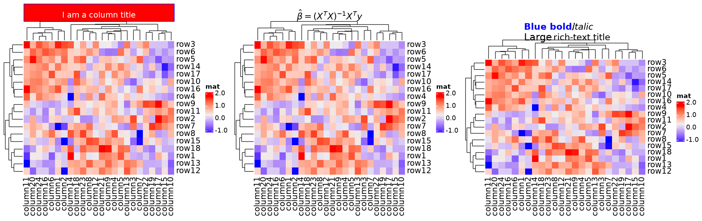
2.3 Clustering#
ComplexHeatmap-py supports flexible hierarchical
clustering configured via: - Pre-defined distance metrics (e.g.,
"euclidean", "pearson",
"spearman"). - Custom 1-argument matrix distance functions
or 2-argument pairwise vector distance functions. - Pre-computed
Hclust, Dendrogram, or SciPy linkage objects.
- Custom clustering functions returning Hclust,
Dendrogram, or linkage arrays.
General clustering visibility, side placement, and dendrogram dimensions are controlled by:
Heatmap(mat, name="mat", cluster_rows=False)
Heatmap(mat, name="mat", show_column_dend=False)
Heatmap(mat, name="mat", row_dend_side="right", column_dend_side="bottom")
Heatmap(mat, name="mat", column_dend_height=unit(3, "cm"), row_dend_width=unit(3, "cm"))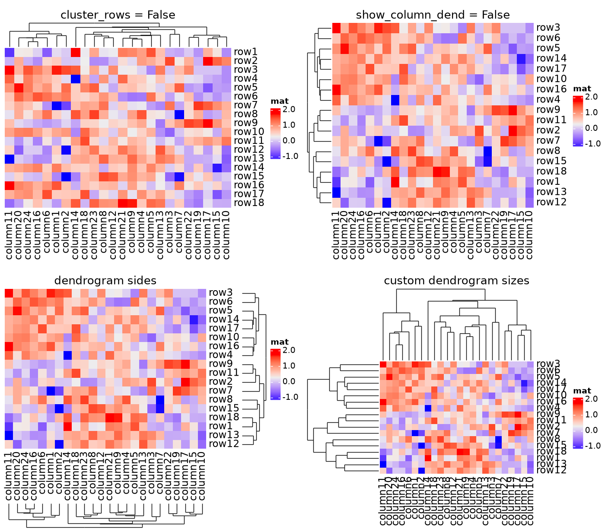
2.3.1 Distance methods#
clustering_distance_rows and
clustering_distance_columns accept: 1. Built-in distance
strings supported by ch.dist(): "euclidean",
"maximum" ("chebyshev"),
"manhattan" ("cityblock"),
"canberra", "binary" ("jaccard"),
"minkowski", plus correlation distances
"pearson", "spearman", and
"kendall" (computed as (1 - corr) / 2 handling
NaN pairwise). 2. A 1-argument function fn(m)
computing a DistMatrix from a matrix m (column
matrices are transposed automatically before calling fn).
3. A 2-argument function fn(x, y) returning a scalar
distance between two 1D vectors (internally wrapped by
ch.dist2()).
Using a custom pairwise distance function makes clustering robust against extreme outliers:
mat_with_outliers = mat.copy()
for i in range(10):
mat_with_outliers.iloc[i, i] = 1000.0
def robust_dist(x: np.ndarray, y: np.ndarray) -> float:
qx = np.quantile(x, [0.1, 0.9])
qy = np.quantile(y, [0.1, 0.9])
mask = (x > qx[0]) & (x < qx[1]) & (y > qy[0]) & (y < qy[1])
xs, ys = x[mask], y[mask]
return float(np.sqrt(np.sum((xs - ys) ** 2)))
col_fun = colorRamp2([-2, 0, 2], ["green", "white", "red"])
draw(Heatmap(mat_with_outliers, name="mat", col=col_fun, column_title="euclidean dist"))
draw(
Heatmap(
mat_with_outliers,
name="mat",
col=col_fun,
clustering_distance_rows=robust_dist,
clustering_distance_columns=robust_dist,
column_title="robust_dist",
)
)
A character matrix can also be clustered once a pairwise distance function is provided:
mat_letters = rng.choice(["a", "b", "c", "d"], size=(10, 10))
def dist_letters(x: np.ndarray, y: np.ndarray) -> float:
ax = np.array([ord(str(c)) for c in x], dtype=float)
ay = np.array([ord(str(c)) for c in y], dtype=float)
return float(np.sqrt(np.sum((ax - ay) ** 2)))
draw(
Heatmap(
mat_letters,
name="letters",
col={"a": 2, "b": 3, "c": 4, "d": 5},
clustering_distance_rows=dist_letters,
clustering_distance_columns=dist_letters,
cell_fun=lambda j, i, x, y, w, h, col: ch.grid_text(mat_letters[i, j], x, y),
column_title="clustering a character matrix",
)
)
2.3.2 Clustering methods#
Hierarchical linkage methods ("complete",
"single", "average", "ward.D",
"ward.D2", "mcquitty", "median",
"centroid") are chosen via
clustering_method_rows and
clustering_method_columns. You can also pass pre-computed
Hclust / Dendrogram / SciPy linkage arrays, a
clustering function fn(m) returning an Hclust
or Dendrogram, or cluster_within_group() /
cluster_between_groups() to restrict clustering to known
subgroups:
from scipy.cluster.hierarchy import fcluster
from complexheatmap import cluster_within_group, dist, hclust
hc_r = hclust(dist(mat), method="ward.D2")
hc_c = hclust(dist(mat.T), method="average")
grp = [f"G{k}" for k in fcluster(hc_c.linkage, 3, criterion="maxclust")]
Heatmap(mat, name="mat", clustering_method_rows="single")
Heatmap(mat, name="mat", cluster_rows=hc_r, cluster_columns=hc_c)
Heatmap(mat, name="mat", cluster_columns=cluster_within_group(mat.to_numpy(), grp))
If fastcluster is installed, you can enable accelerated
linkage globally via ht_opt.fast_hclust = True.
2.3.3 Render dendrograms#
ch.color_branches(dend, k=...) colors subtree branches
across k clusters. Setting row_dend_gp or
column_dend_gp overrides branch colors globally. In Python,
per-node markers can be added directly on Dendrogram nodes
via node.node_par:
from complexheatmap import as_dendrogram, color_branches
row_dend = color_branches(as_dendrogram(hclust(dist(mat))), k=2)
Heatmap(mat, name="mat", cluster_rows=row_dend)
# Global gpar overrides branch colors
Heatmap(mat, name="mat", cluster_rows=row_dend, row_dend_gp=gpar(col="red"))
# Add node symbols via node_par
def style_nodes(node):
node.node_par = {"pch": 16, "col": "#377EB8", "size": unit(2.2, "mm")}
for child in node.children:
style_nodes(child)
2.3.4 Reorder dendrograms#
By default (row_dend_reorder=True when
cluster_rows is boolean or a function, False
when an explicit Hclust/Dendrogram is given),
branches at internal nodes are rotated according to negative row/column
means (reorder_dendrogram) to place dissimilar features
farther apart. Passing a numeric vector to row_dend_reorder
or column_dend_reorder supplies custom leaf weights:
m2 = np.arange(1, 101).reshape(10, 10)
draw(Heatmap(m2, name="mat", row_dend_reorder=False, column_title="no reordering"))
draw(Heatmap(m2, name="mat", row_dend_reorder=True, column_title="applied reordering"))
2.4 Set row and column orders#
Row and column orders can be fixed manually via
row_order and column_order using either
0-based integer indices or row/column label names.
Setting row_order automatically turns off row clustering
(cluster_rows=False), and similarly for
column_order:
# 0-based numeric ordering matching row1..row18 and column1..column24
r_idx = np.argsort([int(r.replace("row", "")) for r in mat.index])
c_idx = np.argsort([int(c.replace("column", "")) for c in mat.columns])
Heatmap(mat, name="mat", row_order=r_idx, column_order=c_idx, column_title="reorder by numeric index")
Heatmap(mat, name="mat", row_order=sorted(mat.index), column_order=sorted(mat.columns), column_title="reorder by row/column names")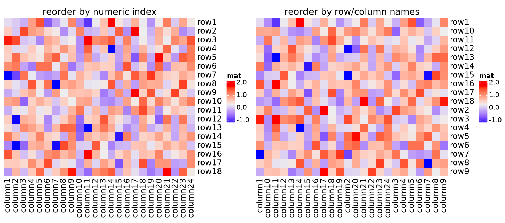
Remember the distinction: row_dend_reorder rotates
subtrees without changing the dendrogram topology, whereas
row_order imposes a fixed sequence and disables
hierarchical clustering.
2.5 Seriation#
Seriation seeks a linear leaf ordering that places similar profiles
adjacent to one another. In Python,
scipy.cluster.hierarchy.optimal_leaf_ordering computes an
optimal leaf ordering directly on a hierarchical clustering linkage and
condensed distance matrix, which wraps cleanly back into
ch.Hclust and ch.as_dendrogram():
from scipy.cluster.hierarchy import optimal_leaf_ordering
d_r = dist(mat)
d_c = dist(mat.T)
hc_r = hclust(d_r)
hc_c = hclust(d_c)
z_opt_r = optimal_leaf_ordering(hc_r.linkage, d_r.condensed)
z_opt_c = optimal_leaf_ordering(hc_c.linkage, d_c.condensed)
hc_opt_r = ch.Hclust(z_opt_r, n=mat.shape[0], labels=list(mat.index), method=hc_r.method)
hc_opt_c = ch.Hclust(z_opt_c, n=mat.shape[1], labels=list(mat.columns), method=hc_c.method)
# Order only (no dendrograms)
Heatmap(mat, name="mat", row_order=hc_opt_r.order, column_order=hc_opt_c.order)
# Optimal-leaf-ordered dendrograms
Heatmap(mat, name="mat", cluster_rows=as_dendrogram(hc_opt_r), cluster_columns=as_dendrogram(hc_opt_c))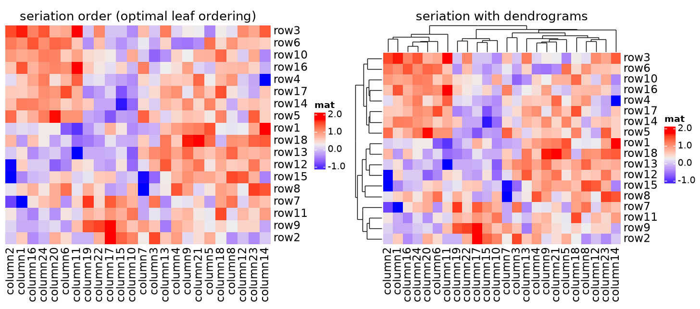
2.6 Dimension labels#
By default, row names appear on the "right" and column
names on the "bottom". Side placement, visibility, font
styling, centering, and rotation can all be customized:
Heatmap(
mat,
name="mat",
row_names_side="left",
row_dend_side="right",
column_names_side="top",
column_dend_side="bottom",
)
Heatmap(mat, name="mat", show_row_names=False)
Heatmap(mat, name="mat", row_names_gp=gpar(col=["red"] * 10 + ["blue"] * 8))
Heatmap(mat, name="mat", row_names_centered=True, column_names_centered=True)
Heatmap(mat, name="mat", column_names_rot=45)
Heatmap(mat, name="mat", column_names_rot=45, column_names_side="top", column_dend_side="bottom")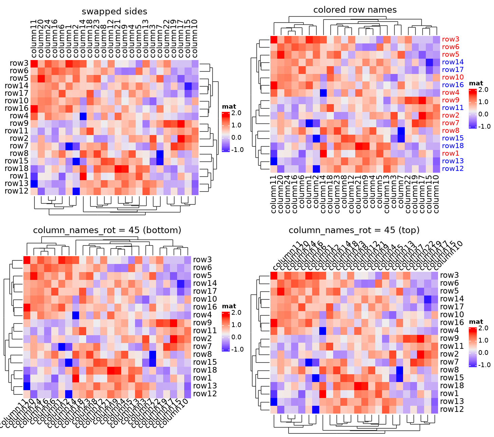
By default, row_names_max_width and
column_names_max_height cap the layout space reserved for
labels at 6 cm. Long names that exceed 6 cm
can overlap the heatmap unless you expand the margin using
max_text_width():
from complexheatmap import max_text_width
mat2 = mat.copy()
idx = list(mat2.index)
idx[0] = "very_long_feature_identifier_example_01"
mat2.index = idx
Heatmap(mat2, name="mat", row_title="default row_names_max_width (6 cm)")
Heatmap(
mat2,
name="mat",
row_title="row_names_max_width = max_text_width(...)",
row_names_max_width=max_text_width(mat2.index, gp=gpar(fontsize=12)),
)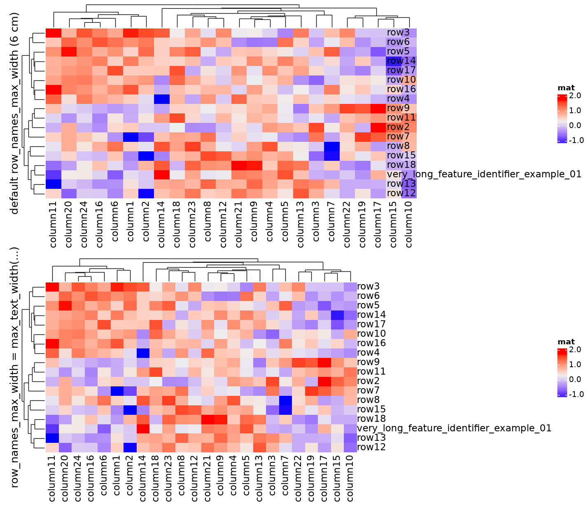
You can also replace displayed labels without modifying the
underlying matrix via row_labels and
column_labels. This supports duplicate labels, Matplotlib
math strings (r"$\alpha$"), and gt_render()
boxed labels:
row_lbl_map = {f"row{i}": f"{chr(96 + i)}{i}" for i in range(1, 25)}
col_lbl_map = {f"column{j}": f"{chr(64 + j)}{j}" for j in range(1, 25)}
Heatmap(
mat,
name="mat",
row_labels=[row_lbl_map[r] for r in mat.index],
column_labels=[col_lbl_map[c] for c in mat.columns],
)
greek_labels = [
r"$\alpha$", r"$\beta$", r"$\gamma$", r"$\delta$", r"$\epsilon$", r"$\zeta$",
r"$\eta$", r"$\theta$", r"$\iota$", r"$\kappa$", r"$\lambda$", r"$\mu$",
r"$\nu$", r"$\xi$", r"$o$", r"$\pi$", r"$\rho$", r"$\sigma$",
]
Heatmap(mat, name="mat", row_labels=greek_labels)
Heatmap(
mat,
name="mat",
row_labels=gt_render(list("abcdefghijklmnopqr"), padding=unit([2, 10, 2, 10], "pt")),
row_names_gp=gpar(box_col=["red", "green"] * 9),
)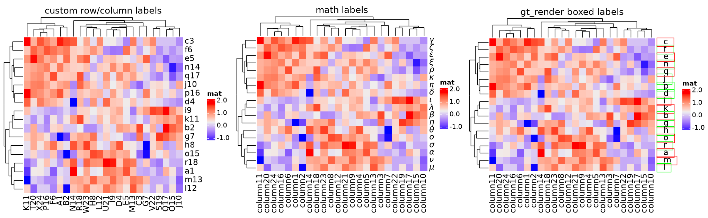
2.7 Heatmap split#
ComplexHeatmap-py splits rows and columns into
sub-clusters called slices using row_km,
column_km, row_split, and
column_split.
2.7.1 Split by k-means clustering#
row_km and column_km partition rows or
columns using k-means clustering. To stabilize stochastic k-means
partitions, increase row_km_repeats /
column_km_repeats for consensus k-means clustering, and set
ht_opt.kmeans_seed for reproducibility. When splitting by
k-means or categorical variables, a parent dendrogram is drawn over
slice means and separated from within-slice child dendrograms by a
dotted line (show_parent_dend_line=False hides it):
ht_opt.kmeans_seed = 123
Heatmap(mat, name="mat", row_km=2)
Heatmap(mat, name="mat", row_km=2, column_km=3)
Heatmap(mat, name="mat", row_km=2, column_km=3, show_parent_dend_line=False)
# Consensus k-means across 50 runs
Heatmap(mat, name="mat", row_km=2, row_km_repeats=50, column_km=3, column_km_repeats=50)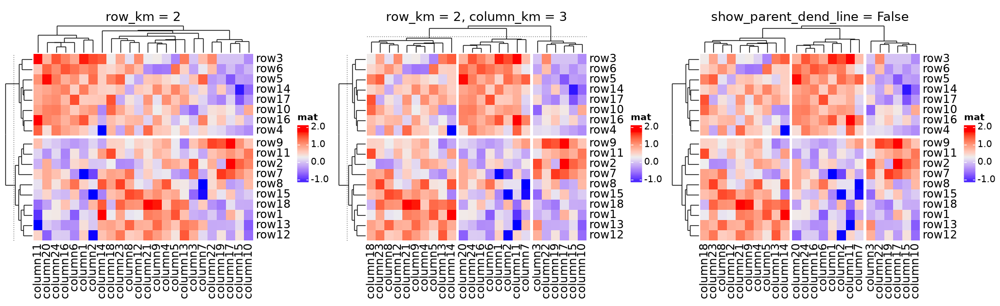
2.7.2 Split by categorical variables#
Pass a 1D list/array or a multi-column pandas.DataFrame
to row_split or column_split, or combine
row_split with row_km (k-means clusters are
inserted as the leading split factor). You can also split using an
integer row_split=2 when supplying a pre-colored
Dendrogram to cut the complete tree via
cut_dendrogram() / cutree(), avoiding separate
parent/child dendrograms:
split_df = pd.DataFrame({"s1": ["A", "B"] * 9, "s2": ["C"] * 9 + ["D"] * 9})
Heatmap(mat, name="mat", row_split=["A", "B"] * 9, column_split=["C", "D"] * 12)
Heatmap(mat, name="mat", row_split=split_df)
# Mix categorical split with k-means or manual row_order
Heatmap(mat, name="mat", row_split=["A", "B"] * 9, row_km=2)
Heatmap(mat, name="mat", row_order=list(range(17, -1, -1)), row_km=2)
# Split discrete character matrix by its first column
Heatmap(discrete_char, name="mat", col=colors_char, row_split=discrete_char[:, 0])2.7.3 Split by dendrogram#
Passing a single integer to row_split or
column_split cuts the global hierarchical dendrogram into
that many slices:
dend_r = color_branches(as_dendrogram(hclust(dist(mat))), k=2)
Heatmap(mat, name="mat", cluster_rows=dend_r, row_split=2)2.7.4 Order of slices#
By default, slice order follows hierarchical clustering of slice
means. Disable slice clustering with
cluster_row_slices=False /
cluster_column_slices=False and pass an ordered
pandas.Categorical to enforce exact slice order:
r_cat = pd.Categorical(["A", "B", "C"] * 6, categories=["C", "B", "A"], ordered=True)
c_cat = pd.Categorical(["a", "b", "c", "d", "e", "f"] * 4, categories=["f", "e", "d", "c", "b", "a"], ordered=True)
Heatmap(
mat,
name="mat",
row_split=r_cat,
column_split=c_cat,
cluster_row_slices=False,
cluster_column_slices=False,
)
2.7.5 Titles for splitting#
When split, row_title and column_title
accept: - A single template string containing %s
(e.g. "cluster_%s" or "Slice: %s"), where
%s is replaced by each slice’s combined label
("A,C", "A,D", etc.). - An explicit list of
per-slice titles matching the number of slices
(e.g. ["top_slice", "middle_top", "middle_bot", "bottom_slice"]).
- A single string without %s to display one shared title
across all slices, or None to hide slice titles. - A global
heatmap-list title passed directly to
draw(ht, row_title="Global Row Title").
2.7.6 Graphic parameters for splitting#
Graphic parameters for slice titles and dimension names accept
per-slice vectors matching the number of slices (remember to use
fontface in Python gpar() rather than R’s
font):
ht_opt.TITLE_PADDING = unit([4, 4], "points")
draw(
Heatmap(
mat,
name="mat",
row_km=2,
row_title_gp=gpar(col=["red", "blue"], fontface=[1, 2]),
row_names_gp=gpar(col=["green", "orange"], fontsize=[10, 14]),
column_km=3,
column_title_gp=gpar(fill=["red", "blue", "green"], fontface=[1, 2, 3]),
column_names_gp=gpar(col=["green", "orange", "purple"], fontsize=[10, 14, 8]),
)
)
ht_opt(RESET=True)2.7.7 Gaps between slices#
row_gap and column_gap accept a single
Unit or a vector of Unit values between
consecutive slices. Setting
row_gap=unit(0, "mm"), column_gap=unit(0, "mm"), border=True
partitions the matrix with crisp grid lines.
2.7.8 Split heatmap annotations#
All attached annotations (including block annotations
anno_block()) split and reorder automatically along with
the heatmap slices (see Chapter
3):
from complexheatmap import HeatmapAnnotation, anno_barplot, anno_block, anno_points, rowAnnotation
Heatmap(
mat,
name="mat",
row_km=2,
column_km=3,
top_annotation=HeatmapAnnotation(
Group=anno_block(gp=gpar(fill=["#E41A1C", "#377EB8", "#4DAF4A"]), labels=["C1", "C2", "C3"], labels_gp=gpar(col="white")),
foo1=np.arange(1, 25),
bar1=anno_points(rng.uniform(size=24)),
),
right_annotation=rowAnnotation(
foo2=np.arange(18, 0, -1),
bar2=anno_barplot(rng.uniform(size=18)),
),
border=True,
)
2.8 Heatmap as raster image#
Vector outputs (PDF or SVG) store a rectangle primitive for every
matrix cell, which quickly becomes slow and bulky for thousands of rows
or columns even though individual cells map to sub-pixel dimensions.
When use_raster=True, ComplexHeatmap-py
renders the color matrix via Matplotlib’s high-DPI raster
imshow backend (grid_raster) while keeping
dendrograms, borders, labels, and legends as crisp vector graphics.
By default, use_raster activates automatically whenever
a numeric/categorical matrix has more than 2000 rows (with
> 10 columns) or more than 2000 columns
(with > 10 rows), provided cell_fun is
None. When downsampling large matrices prior to
rasterization, raster_resize_mat accepts True
(np.nanmean) or any reduction function mapping a 2D block
to a scalar (such as np.nanmax, np.nanmin, or
a custom sampler):
from complexheatmap import hcl_colors
mat2 = np.empty((5000, 50), dtype=float)
for i in range(5000):
half = np.sort(np.abs(rng.standard_normal(50)))[:25]
mat2[i, :] = rng.uniform(size=50) + np.concatenate([half, half[::-1]]) * ((i + 1) / 1000.0)
mat2 = mat2[::-1, :]
brks = np.linspace(np.quantile(mat2, 0.01), np.quantile(mat2, 0.99), 11)
col_fun2 = colorRamp2(brks, hcl_colors(11, "Spectral", rev=True))
draw(Heatmap(mat2, col=col_fun2, cluster_rows=False, cluster_columns=False, show_heatmap_legend=False, use_raster=True))
draw(Heatmap(mat2, col=col_fun2, cluster_rows=False, cluster_columns=False, show_heatmap_legend=False, use_raster=True, raster_resize_mat=np.nanmean))
draw(Heatmap(mat2, col=col_fun2, cluster_rows=False, cluster_columns=False, show_heatmap_legend=False, use_raster=True, raster_resize_mat=np.nanmax))
draw(Heatmap(mat2, col=col_fun2, cluster_rows=False, cluster_columns=False, show_heatmap_legend=False, use_raster=True, raster_resize_mat=np.nanmin))
draw(Heatmap(mat2, col=col_fun2, cluster_rows=False, cluster_columns=False, show_heatmap_legend=False, use_raster=True, raster_resize_mat=lambda sub: float(sub.flat[0])))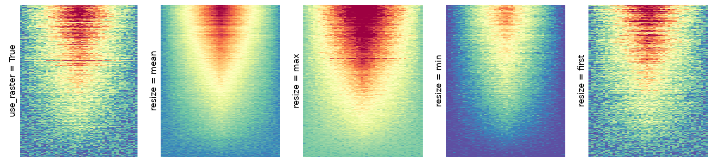
The reduction in PDF output size and rendering time is dramatic. On a 2500 × 50 matrix rendered to PDF at 100 dpi:
import io, time
mat_big = rng.standard_normal((2500, 50))
for flag in (False, True):
t0 = time.perf_counter()
ht_out = draw(Heatmap(mat_big, cluster_rows=False, cluster_columns=False, show_heatmap_legend=False, use_raster=flag), width=4, height=4, dpi=100)
buf = io.BytesIO()
ht_out._device.fig.savefig(buf, format="pdf")
print(f"use_raster={flag}: {len(buf.getvalue()) / 1024:.1f} KB in {time.perf_counter() - t0:.2f}s")use_raster=False: 2791.4 KB in 6.92s
use_raster=True: 80.7 KB in 0.06s2.9 Customize the heatmap body#
Each cell in the heatmap body can be augmented or replaced entirely
using cell_fun (per cell) or layer_fun
(vectorized per slice). High-level modules such as OncoPrint, UpSet
plot, and 3D
ComplexHeatmap are built on these hooks.
2.9.1 cell_fun#
cell_fun accepts a callback with 7 positional arguments
(j, i, x, y, width, height, fill): - j:
0-based column index in the original matrix
(0 .. ncol - 1). - i: 0-based
row index in the original matrix (0 .. nrow - 1). -
x, y: Unit coordinates of the
cell center inside the slice body viewport. - width,
height: Unit dimensions of the cell
(1 / nc_s and 1 / nr_s in "npc").
- fill: resolved hex color string of the cell.
from complexheatmap import convertHeight, convertWidth, dist, grid_circle, grid_rect, grid_text, hclust
small_mat = mat.iloc[:9, :9]
small_arr = small_mat.to_numpy()
col_fun = colorRamp2([-2, 0, 2], ["green", "white", "red"])
# 1. Text overlay in every cell
Heatmap(
small_mat,
name="mat",
col=col_fun,
cell_fun=lambda j, i, x, y, w, h, fill: grid_text(f"{small_arr[i, j]:.1f}", x, y, gp=gpar(fontsize=9)),
)
# 2. Positive values only across splits
Heatmap(
small_mat,
name="mat",
col=col_fun,
row_km=2,
column_km=2,
cell_fun=lambda j, i, x, y, w, h, fill: (
grid_text(f"{small_arr[i, j]:.1f}", x, y, gp=gpar(fontsize=9)) if small_arr[i, j] > 0 else None
),
)
# 3. corrplot-style correlation matrix with rect_gp=gpar(type="none")
cor_mat = small_mat.corr()
od = hclust(dist(cor_mat)).order
cor_mat = cor_mat.iloc[od, od]
cor_arr = cor_mat.to_numpy()
nm = list(cor_mat.index)
col_cor = colorRamp2([-1, 0, 1], ["green", "white", "red"])
def cell_cor(j, i, x, y, w, h, fill):
grid_rect(x=x, y=y, width=w, height=h, gp=gpar(col="grey", fill=None))
if i == j:
grid_text(nm[i], x=x, y=y, gp=gpar(fontsize=8.5))
elif i > j:
r_mm = min(convertWidth(w, "mm", valueOnly=True), convertHeight(h, "mm", valueOnly=True)) * 0.45 * abs(cor_arr[i, j])
grid_circle(x=x, y=y, r=unit(r_mm, "mm"), gp=gpar(fill=col_cor(cor_arr[i, j]), col=None))
else:
grid_text(f"{cor_arr[i, j]:.1f}", x=x, y=y, gp=gpar(fontsize=8.5))
Heatmap(
cor_mat,
name="correlation",
col=col_cor,
rect_gp=gpar(type="none"),
cell_fun=cell_cor,
cluster_rows=False,
cluster_columns=False,
show_row_names=False,
show_column_names=False,
)
A classic custom example renders a 19 × 19 Go game board with wood
tiles, grid lines, 0-based star points
(i in (3, 9, 15) and j in (3, 9, 15)),
black/white stones, and a custom Legend (see Chapter 5):
from complexheatmap import Legend, grid_points, grid_segments
def go_cell(j, i, x, y, w, h, fill):
grid_rect(x, y, w, h, gp=gpar(fill="#dcb35c", col=None))
if i == 0:
grid_segments(x, y - h * 0.5, x, y, gp=gpar(col="#222222", lwd=0.8))
elif i == 18:
grid_segments(x, y, x, y + h * 0.5, gp=gpar(col="#222222", lwd=0.8))
else:
grid_segments(x, y - h * 0.5, x, y + h * 0.5, gp=gpar(col="#222222", lwd=0.8))
if j == 0:
grid_segments(x, y, x + w * 0.5, y, gp=gpar(col="#222222", lwd=0.8))
elif j == 18:
grid_segments(x - w * 0.5, y, x, y, gp=gpar(col="#222222", lwd=0.8))
else:
grid_segments(x - w * 0.5, y, x + w * 0.5, y, gp=gpar(col="#222222", lwd=0.8))
if i in (3, 9, 15) and j in (3, 9, 15):
grid_points(x, y, pch=16, size=unit(2, "mm"))
r_mm = min(convertWidth(w, "mm", valueOnly=True), convertHeight(h, "mm", valueOnly=True)) * 0.43
if go_arr[i, j] == "W":
grid_circle(x, y, r=unit(r_mm, "mm"), gp=gpar(fill="white", col="#444444", lwd=0.6))
elif go_arr[i, j] == "B":
grid_circle(x, y, r=unit(r_mm, "mm"), gp=gpar(fill="black", col="black"))
ht_go = Heatmap(
go_mat,
name="go",
col={"B": "black", "W": "white"},
rect_gp=gpar(type="none"),
cell_fun=go_cell,
cluster_rows=False,
cluster_columns=False,
show_row_names=False,
show_column_names=False,
column_title="One famous Go game",
show_heatmap_legend=False,
)
lgd = Legend(
title="Players",
labels=["player1 (B)", "player2 (W)"],
type="points",
pch=16,
legend_gp=gpar(col=["black", "white"]),
size=unit(4.5, "mm"),
background="#dcb35c",
)
draw(ht_go, heatmap_legend_list=[lgd])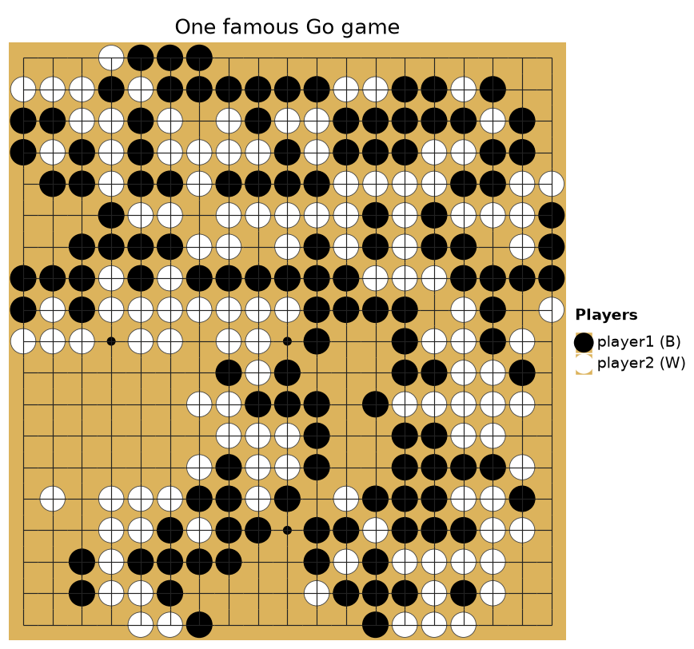
2.9.2 layer_fun#
layer_fun is the vectorized counterpart of
cell_fun invoked once per slice rather than once per cell.
Its 7 vector arguments (j, i, x, y, w, h, fill) hold 1D
arrays/Units for every cell in the current slice, and an optional
8th/9th parameter (..., slice_r, slice_c) passes the
1-based row and column slice indices.
Because i and j are 0-based index arrays,
use ch.pindex(mat, i, j) for pairwise lookup
(mat[i[k], j[k]]):
from complexheatmap import pindex, restore_matrix
mfoo = np.arange(1, 10).reshape(3, 3, order="F")
# array([[1, 4, 7],
# [2, 5, 8],
# [3, 6, 9]])
pindex(mfoo, [0, 1], [0, 2])
# array([1, 8])When graphics depend on neighboring cells within a slice,
restore_matrix(j, i, x, y) reconstructs a 2D matrix of
vector positions ordered top-to-bottom and left-to-right inside the
slice:
# 1. Conditional slice border on off-diagonal slices
def layer_slice_border(j, i, x, y, w, h, fill, slice_r, slice_c):
v = pindex(small_arr, i, j)
grid_text([f"{val:.1f}" for val in v], x, y, gp=gpar(fontsize=9))
if slice_r != slice_c:
grid_rect(gp=gpar(lwd=2.0, col="black", fill="transparent"))
# 2. Connect neighboring same-sign cells along each row using restore_matrix()
def layer_neighbor(j, i, x, y, w, h, fill):
ind_mat = restore_matrix(j, i, x, y)
for ir in range(ind_mat.shape[0]):
for ic in range(1, ind_mat.shape[1]):
ind1 = int(ind_mat[ir, ic - 1])
ind2 = int(ind_mat[ir, ic])
v1 = small_arr[i[ind1], j[ind1]]
v2 = small_arr[i[ind2], j[ind2]]
if v1 * v2 > 0:
line_col = "darkred" if v1 > 0 else "darkgreen"
grid_segments(x[ind1], y[ind1], x[ind2], y[ind2], gp=gpar(col=line_col, lwd=2))
grid_points(x[[ind1, ind2]], y[[ind1, ind2]], pch=16, gp=gpar(col=line_col), size=unit(3.2, "mm"))
# 3. Highlight row index 1 and column index 2 in every slice (0-based)
def layer_crosshair(j, i, x, y, w, h, fill):
ind_mat = restore_matrix(j, i, x, y)
inds = np.unique(np.concatenate([ind_mat[1, :], ind_mat[:, 2]]))
grid_points(x[inds], y[inds], pch=16, size=unit(3.6, "mm"), gp=gpar(col="black"))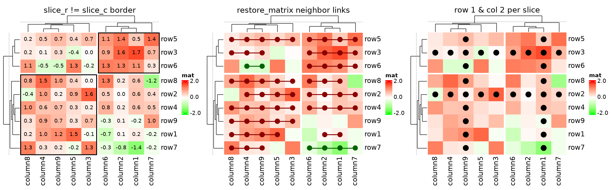
2.10 Size of the heatmap#
width and height control the
heatmap body dimensions, whereas
heatmap_width and heatmap_height control the
complete heatmap dimensions including dendrograms,
titles, row/column names, and annotations (excluding legends):
from complexheatmap import ht_size
ht1 = Heatmap(mat, name="mat", width=unit(8, "cm"), height=unit(8, "cm"))
ht1_drawn = draw(ht1)
print(ht_size(ht1_drawn))
# unit([118.441mm, 112.999mm])
ht2 = Heatmap(mat, name="mat", heatmap_width=unit(8, "cm"), heatmap_height=unit(8, "cm"))
ht2_drawn = draw(ht2)
print(ht_size(ht2_drawn))
# unit([93.4762mm, 80mm])
Notice ht_size(ht2_drawn) reports height
80 mm (8 cm) and width 93.5 mm
(8 cm heatmap + legend width). Reassigning the return value
of draw(ht) is essential before calling
ht_size(), because layout dimensions are computed during
draw().
2.11 Plot the heatmap#
Heatmap() constructs an uninitialized
Heatmap specification; clustering, splitting, and layout
computation happen only when draw() is executed. In Python,
you can render or export a heatmap with either:
ht = Heatmap(mat, name="mat")
# Equivalent ways to draw or save
ht_drawn = draw(ht)
ht_drawn = ht.draw(save="heatmap.png", width=8, height=6, dpi=150)Calling draw(ht) creates a single-element
HeatmapList and delegates to
HeatmapList.draw(), which accepts global layout arguments
such as heatmap_legend_side, padding,
row_title, and column_title (covered in Chapter 4). In Jupyter/IPython
environments, Heatmap and HeatmapList also
define _repr_png_() for automatic inline display.
2.12 Extract orders and dendrograms#
Use row_order(), column_order(),
row_dend(), and column_dend() to extract
clustering orderings (0-based Python indices) and
Dendrogram objects. Always call ht = draw(ht)
first so row_order(ht) extracts the exact ordering rendered
on screen rather than recomputing clustering (especially important when
row_km or column_km is used):
from complexheatmap import column_dend, column_order, row_dend, row_order
small_mat = mat.iloc[:9, :9]
ht = Heatmap(small_mat)
ht_drawn = draw(ht)
print(row_order(ht_drawn))
# [4, 2, 5, 7, 1, 3, 8, 0, 6]When rows or columns are split into multiple slices,
row_order(), column_order(),
row_dend(), and column_dend() return a Python
list with one entry per slice:
ht_opt.kmeans_seed = 123
ht = Heatmap(small_mat, row_km=2, column_km=3)
ht_drawn = draw(ht)
print(row_order(ht_drawn))
# [[4, 2, 5], [7, 1, 3, 8, 0, 6]]
print(column_order(ht_drawn))
# [[5, 1, 0], [7, 3, 8, 4], [2, 6]]
print(row_dend(ht_drawn))
# [Dendrogram(members=3, height=2.557, leaf=False), Dendrogram(members=6, height=3.563, leaf=False)]
print(column_dend(ht_drawn))
# [Dendrogram(members=3, height=1.859, leaf=False), Dendrogram(members=4, height=2.61, leaf=False), Dendrogram(members=2, height=2.567, leaf=False)]2.13 Subset a heatmap#
An uninitialized Heatmap (before draw())
supports standard 0-based Python slicing, integer
lists, boolean masks, and row/column name indexing via
ht[rows, cols]. Attached annotations, per-element
gpar vectors, and split settings (row_km,
column_km, categorical splits) are subsetted
automatically:
from complexheatmap import dim
ht = Heatmap(mat, name="mat")
print(dim(ht))
# (18, 24)
ht_sub = ht[:10, :10]Combining annotations, k-means splitting, and 0-based slicing
(ht[:10, :10] or ht[::2, 1::2] for
even-indexed rows and odd-indexed columns):
ht = Heatmap(
mat,
name="mat",
row_km=2,
column_km=3,
col=colorRamp2([-2, 0, 2], ["green", "white", "red"]),
top_annotation=HeatmapAnnotation(foo1=np.arange(1, 25), bar1=anno_points(rng.uniform(size=24))),
right_annotation=rowAnnotation(foo2=np.arange(18, 0, -1), bar2=anno_barplot(rng.uniform(size=18))),
)
draw(ht[:10, :10])
draw(ht[::2, 1::2])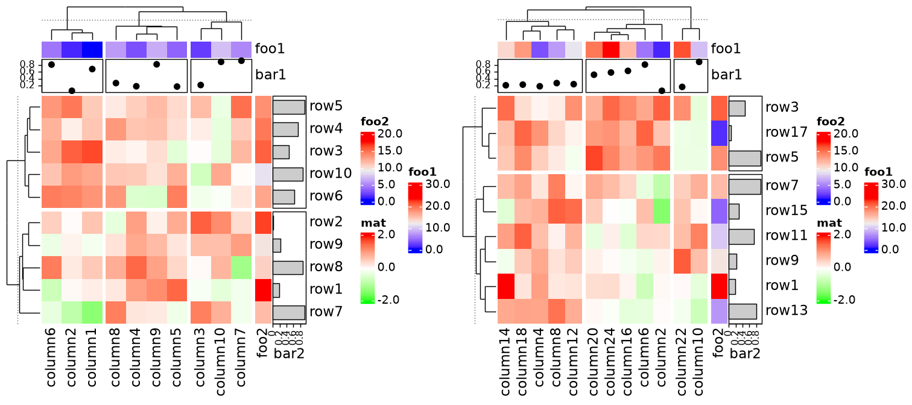
Subsetting works only prior to draw() and is not
supported when cluster_rows/cluster_columns
holds a pre-computed Dendrogram/Hclust or when
cell_fun/layer_fun indexes an external
unsubsetted matrix directly. Subsetting methods for
HeatmapAnnotation and HeatmapList are
introduced in Chapter 3 and Chapter 4.